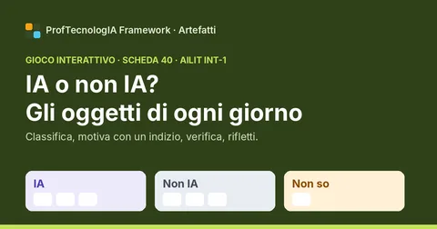

Tutto quello che si può scaricare, sfogliare o usare nel sito. Le presentazioni hanno le note del relatore e si sfogliano direttamente nella sezione del loro framework; i documenti si scaricano in Word, PDF o testo. Cerca per parola o filtra per tipo, framework e destinatari: il link della pagina conserva i filtri.
Artefatti digitali
Tutti gli artefatti →Giochi e strumenti interattivi nati dalle schede del Catalogo: si aprono nel browser, anche dal telefono con il QR, senza account.

IA o non IA? Gioco interattivo sugli oggetti di ogni giornoArtefatto dalla scheda 40 (AILit INT-1): ogni alunno classifica oggetti e servizi quotidiani in IA, Non IA o Non so, motiva con un indizio, rivede il… Vero o generato? Gioco interattivo sulle immagini create con l'IAArtefatto dalla scheda 171 (AILit INT-3), da usare anche con la scheda 118 (Detective dei deepfake): volti, animali, luoghi e cibi, foto vere o…
Vero o generato? Gioco interattivo sulle immagini create con l'IAArtefatto dalla scheda 171 (AILit INT-3), da usare anche con la scheda 118 (Detective dei deepfake): volti, animali, luoghi e cibi, foto vere o… La tavola delle storie: tropi, trame e raccontiArtefatto dalla scheda 174 (AILit CRE-1): la tavola periodica delle storie con 64 tropi in otto famiglie, adattata da James Harris. Si analizza una…
La tavola delle storie: tropi, trame e raccontiArtefatto dalla scheda 174 (AILit CRE-1): la tavola periodica delle storie con 64 tropi in otto famiglie, adattata da James Harris. Si analizza una…Tipo
Per
Nessun materiale corrisponde ai filtri scelti.